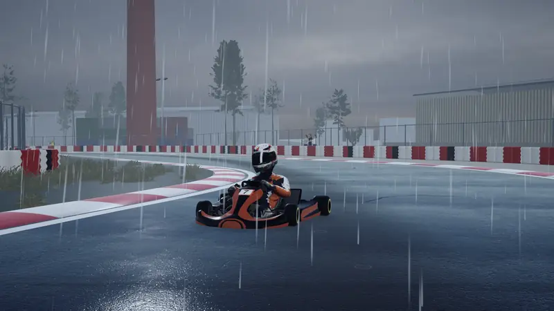
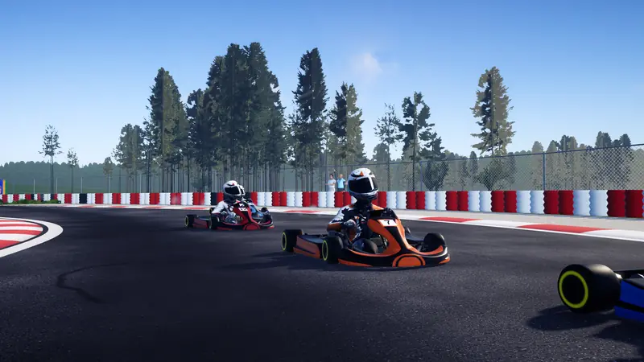
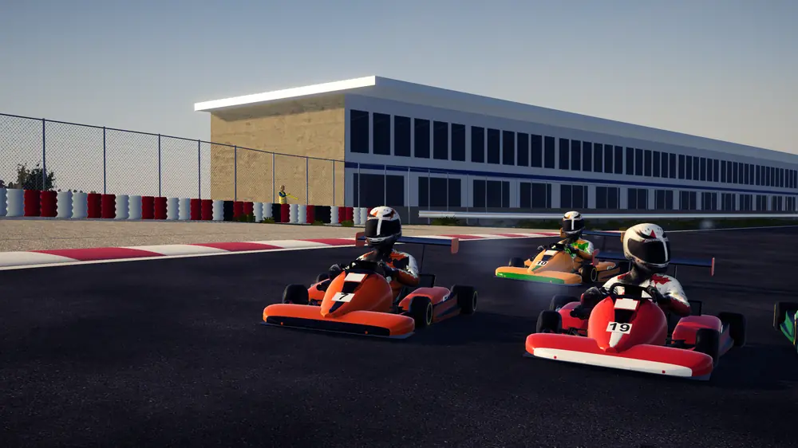
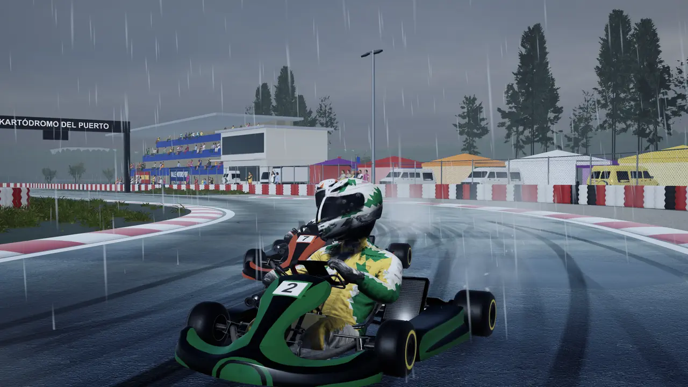
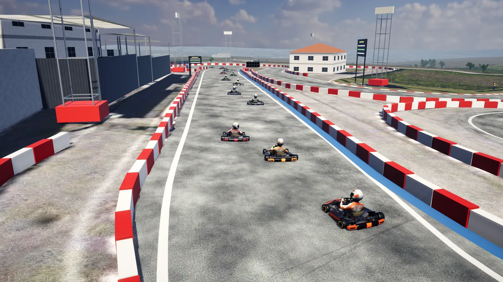
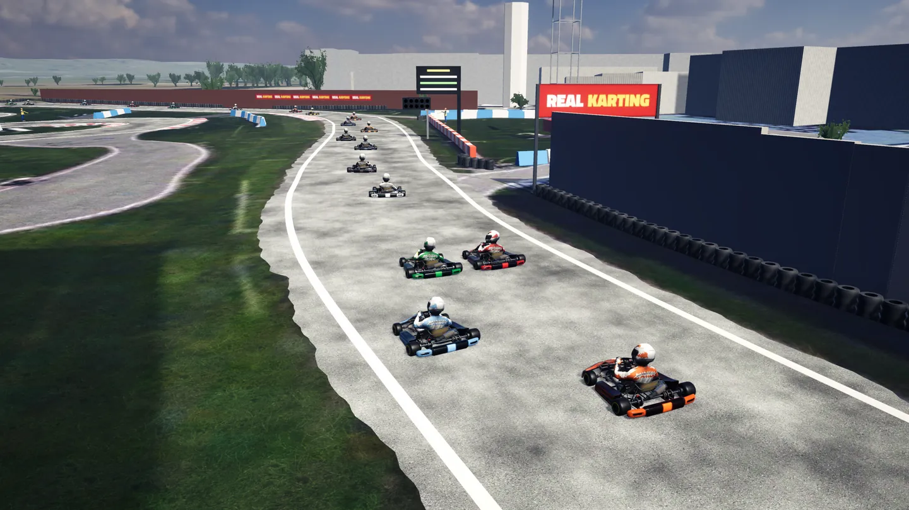
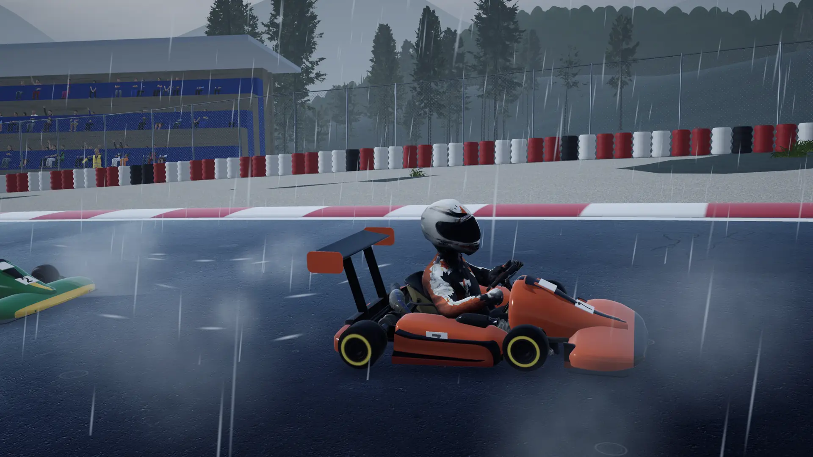

Etapa 1/6
Etapa 1/6Aluguel 4T
VORTEX R-390
Pesado, dócil e com pneus duros. As noites de kart de aluguel são onde tudo começa.
- Motor4 tempos
- Potência11 hp
- CâmbioTransmissão direta

Comece num kart de aluguel e suba pelas categorias reais do kartismo até o Superkart 250 cc. Física real, grids de 20 karts e corridas na chuva, no iPhone, iPad e Mac.
 Em breveMac App StoreEm breveGoogle Play
Em breveMac App StoreEm breveGoogle PlayGrátis no iPhone e no iPad. Mac e Android em breve.
Segure o celular na horizontal com as duas mãos e gire. No modo VOLANTE você vai sentado no kart: o horizonte fica reto, o volante gira nas suas mãos e cada zebra chega até você pela vibração.
Visão de dentro do kart e o celular como volante, com os pedais de acelerador e freio sob os polegares.
Prefere o jeito clássico? Mude para joystick na tela ou para inclinação em Ajustes.
Conecte um controle Bluetooth (PlayStation, Xbox e MFi). No Mac, pilote com o teclado ou com um controle, com vibração.
A carreira segue as categorias reais do kartismo. Você sempre larga do fundo do grid: ganhe uma medalha e a próxima prova se abre; ganhe uma medalha na Final e você sobe de categoria.
Etapa 1/6Pesado, dócil e com pneus duros. As noites de kart de aluguel são onde tudo começa.

Etapa 2/6Leve e arisco: seu primeiro campeonato com licença, contra pilotos que não dão moleza.

Etapa 3/6125 cc, sem marchas, embreagem centrífuga. É aqui que as equipes começam a ficar de olho em você.
 Etapa 4/6
Etapa 4/6Mais potência, os mesmos reflexos. Os melhores pilotos do país no campeonato nacional.
 Etapa 5/6
Etapa 5/6Câmbio sequencial de seis marchas, freios dianteiros e a elite internacional. A categoria rainha do kart.
 Etapa 6/6
Etapa 6/6Carenagem completa e mais de 200 km/h em circuitos de verdade. O mais rápido que dá para correr sentado rente ao chão.
Toque em ONLINE e corra contra outros pilotos na mesma pista. Quem está conectado disputa entre si e a IA ocupa as vagas livres, então a corrida sempre larga com 20 karts, mesmo se você estiver sozinho.

Cometa 7 Sol 19Um toque: você entra numa sala aberta, numa corrida já em andamento ou cria uma nova.
Escolha a categoria e o circuito. A sala espera 60 segundos por pilotos, ou toque em COMEÇAR JÁ.
Assuma o kart da última IA com as voltas dela, enquanto o líder não passar da metade.
Cada humano é um kart de verdade na pista: defenda, encoste roda com roda e brigue em cada curva.
Você recebe um nome de piloto aleatório e muda quando quiser. Grátis, sem cadastro e com estatísticas online: corridas, vitórias e pódios.
Um servidor na Europa para todos: celulares, tablets e Macs correm nas mesmas salas.
Real Karting usa uma física de veículo própria, escrita do zero para karts, com assistências ajustáveis para você aprender primeiro e depois desligá-las.

ChuvaA aderência some, as zebras viram gelo e o spray esconde o kart da frente. Pelo menos uma corrida no molhado em cada categoria, com gotas na viseira.
Modelo de pneus com deslizamento, transferência de peso, vácuo e zebras, simulado 500 vezes por segundo. Cada categoria tem seu peso, sua potência e sua aderência.

Largue do fundo e abra caminho entre 19 rivais (12 karts no Superkart).

A IA segue o traçado ideal de cada pista, defende, procura a brecha e erra sob pressão.

Manhãs, meio-dia, tardes douradas e pores do sol, com céus reais em cada pista.
Sinta as zebras, a grama, os pneus deslizando, as ondulações e cada toque.
Cores, número, acabamentos de pintura, neon e fumaça colorida, tudo conquistado com medalhas. Sem caixas aleatórias.
Kartódromos de verdade reproduzidos metro a metro e circuitos originais criados para o jogo: 24 traçados no total, da pista de aluguel ao grande circuito do Superkart.
Reproduzimos kartódromos reais metro a metro, a partir de fotografia aérea e relevo LiDAR. Cada um tem sua página, com o mapa, os tempos da vida real e o ranking dos jogadores. Mais estão a caminho.

Pedrezuela, região de Madri (Espanha) · 646 m · 11 curvas
Recorde real 36.210

Pinto, região de Madri (Espanha) · 977 m · 10 curvas
Recorde real 49.020
11 circuitos criados para o jogo, com 22 traçados: pistas de aluguel sinuosas, kartódromos entre pinheiros, à beira-mar e na encosta de uma montanha, e grandes circuitos para o Superkart. Quase todos também podem ser corridos no sentido inverso.
Sim. Real Karting é grátis para baixar e jogar, sem anúncios, sem caixas aleatórias e sem nada para comprar para vencer: todos correm com o mesmo kart e vence o melhor piloto.
Hoje no iPhone e no iPad. A versão nativa para macOS e a versão para Android chegam em breve.
Sim. Toque em ONLINE para uma partida rápida, crie sua sala ou entre numa corrida em andamento, com pilotos reais e a IA completando o grid. É grátis e não precisa de conta. O modo carreira continua funcionando offline.
2 circuitos reais da Espanha reproduzidos metro a metro, com seus tempos da vida real, e 11 circuitos originais com 22 traçados. Mais circuitos reais vão chegando. Você pode ver todos na página de circuitos.
Segure o celular na horizontal com as duas mãos e gire como um volante. Os pedais de acelerador e freio ficam sob os polegares, e o modo VOLANTE dá a visão de dentro do kart com o horizonte reto. Em Ajustes você pode mudar para joystick ou inclinação.
Sim. Você pode conectar um controle Bluetooth (PlayStation, Xbox e MFi) no iPhone, iPad e Mac. No Mac também dá para pilotar com o teclado.
Para o modo carreira, não: ele funciona totalmente offline e sem conta, e seu progresso fica salvo no seu dispositivo. Só o modo online, opcional, precisa de conexão.
É um simcade: a física do veículo é real (pneus, transferência de peso, vácuo, um acerto diferente para cada categoria), mas as assistências deixam qualquer pessoa se divertir desde a primeira volta. Desligue-as e pilote como um profissional.
Seis categorias reais: Aluguel 4T, Cadete 60 cc, Júnior 125, Sênior 125, KZ com câmbio de seis marchas e o Superkart 250 cc em grandes circuitos.
Português, inglês, espanhol, francês, alemão e italiano.
Muito poucos, e nunca seu nome real nem seu e-mail. O jogo não tem anúncios nem ferramentas de análise de terceiros. Para as tabelas de tempos ele dá a você um nome de piloto aleatório (você pode mudar) e envia dados de cada corrida para conferir que as voltas são reais; dá para desativar nos Ajustes e apagar seu perfil quando quiser. Todos os detalhes estão na política de privacidade.

Baixe o Real Karting e transforme seu celular em um volante.
Em breveMac App StoreEm breveGoogle PlayGrátis no iPhone e no iPad. Mac e Android em breve.
Encontrou um bug, tem uma ideia ou algo não funciona? Escreva para nós e responderemos.
Informe seu aparelho e a versão do jogo (aparece no canto inferior direito do menu principal). Dica: se o jogo estiver lento, escolha uma qualidade mais baixa em AJUSTES > GRÁFICOS; se você sai muito da pista, aumente as ajudas.
Fale conosco